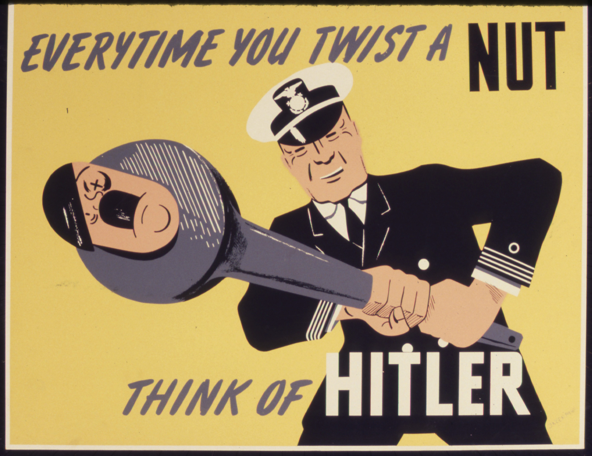
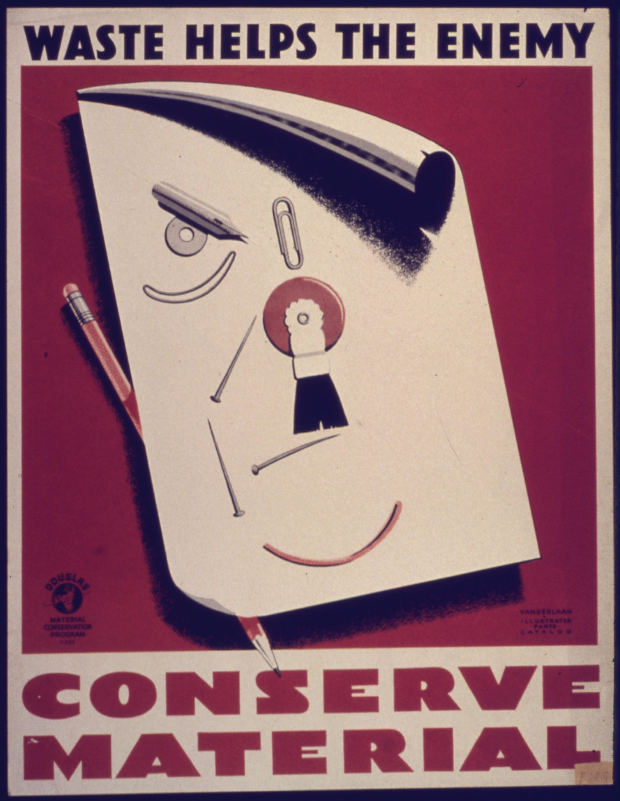
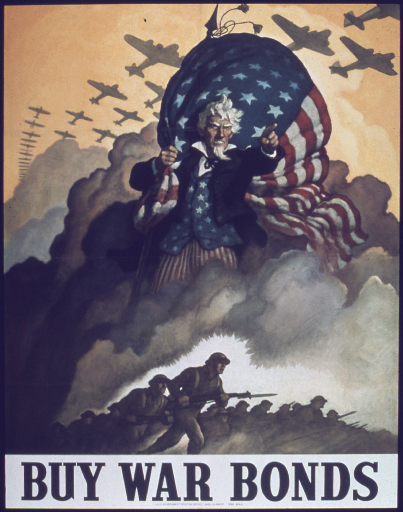

Few Americans were willing to consider military action against the Japanese in 1940 and 1941, and most considered Asian affairs to be of secondary importance to the events in Europe. To the Japanese, however, the United States embargo was an act of aggression that would make its empire vulnerable at the very moment it was expanding throughout Asia. From this perspective, there appeared little reason to maintain diplomatic relations with the United States. The Japanese now viewed the US-controlled Philippines much in the same context as the Dutch, French, and British colonies in Southeastern Asia. Hitler’s war on these European powers could not have occurred at a better time for Japanese imperialists. They convinced the Japanese emperor that their alliance with Germany provided an opportunity for Japanese expansion into Southeastern Asia. With these European nations fighting for their very survival, Japan attacked their colonies throughout the region and seized control of raw materials and trade routes. Before these attacks were launched, however, Japanese officials launched a surprise attack on the United States they believed was necessary to prevent US interference.
With China and the Europe fighting for survival, Japan expected little resistance in Southeastern Asia. In fact, the Japanese recognized that only one major naval power stood in their way of conquest—the United States. Japanese planners recognized that further aggression in Asia might lead to a more aggressive response than a trade embargo. (Historians now know that US military and civilian leaders had already determined not to intervene with military in Asia, even if Japan attacked US bases in the Philippines.) The Japanese fully recognized the industrial power of the United States; however, they believed a sudden and devastating attack on America’s Pacific Fleet at Pearl HarborA surprise attack launched by the Japanese navy on the American Pacific Fleet anchored at Pearl Harbor in Hawaii on December 7, 1941. The attack resulted in the deaths of over 2,000 US servicemen and servicewomen and greatly reduced the effectiveness of the fleet. However, the attack failed to destroy US aircraft carriers and resulted in the US declaration of war against Japan, Germany, and Italy. would cripple the US navy for at least a year. During the interim, Japan planned to complete its conquest of Southeast Asia and build impenetrable defenses throughout the region. America’s first opportunity to launch a counterattack would not occur until the summer of 1943, and by this time, the Americans would be ill-advised to send their newly rebuilt navy into the Japanese stronghold for its second slaughter.
By the winter of 1941, US leaders determined that they would no longer trade with Japan unless they ended their expansionistic campaign. In November, the United States demanded that Japan withdraw from China before any resumption of trade could commence. The talks quickly stalled on this point since the leading reason the Japanese sought oil from the Americans was to facilitate the expansion of their empire. By this time, Japanese forces had been secretly preparing for an attack against Pearl Harbor for over a year. In fact, US intelligence officers intercepted messages warning of the possibility of an attack should trade negotiations fail. Given the proximity of the US-controlled Philippines to Japan, many predicted that any attack would occur on these islands. While the military leaders debated on how to respond to a potential attack on the Philippines, all Pacific bases were ordered to increase their internal security. While officials at Pearl Harbor were on alert for potential acts of sabotage, few even considered the possibility of a carrier-based attack 4,000 miles from the Japanese mainland.
Just before 8:00 a.m. on Sunday, December 7, 350 Japanese warplanes launched in two waves from six aircraft carriers attacked America’s Pacific Fleet anchored at Pearl Harbor. Each of the eight battleships that were present that morning was damaged, while half of them were destroyed. The attack also sunk a dozen other warships and destroyed nearly 200 aircraft. Of the 2,402 US servicemen who perished that day, nearly half were aboard the USS Arizona when a bomb caused its forward ammunition magazines to explode. The Japanese lost only a handful of aircraft in the attack. Their commanders recognized that despite the apparent success of their mission, it had failed to achieve its primary objective of crippling the US Pacific fleet. Although US losses were high, all three of the fleet’s aircraft carriers escaped destruction at Pearl Harbor because they had been out to sea for various reasons.
Figure 8.1

The USS West Virginia burns in the background while a crew saves a navy seaman who was able to escape the destruction.
Hours after the attack at Pearl Harbor began, Japanese warplanes began an assault on US forces stationed in the Philippines. For reasons that are still unclear, General Douglas MacArthur failed to mobilize in preparation for this attack, and Japanese aircraft destroyed most of United States’ Far East Air Force, which was still on the ground. Roosevelt addressed Congress on December 8. The president declared the attack at Pearl Harbor to be a “date which will live in infamy” and requested a declaration of war. Congress agreed, and the United States officially declared that a state of war existed with Japan, as well as Germany and Italy.
The American people overwhelmingly supported their president’s request for war following the attack on Pearl Harbor. Even former isolationists agreed; they could be found among those who joined the military or otherwise helped their nation prepare for the impending struggle. Indignation at the attack soon turned to fear as Japan defeated French, British, and Dutch colonial forces throughout Southeastern Asia. America’s own position in the Pacific was equally perilous. US bases on Guam and Wake Island surrendered to the Japanese. By early 1942, many predicted that a second attack on Pearl Harbor would lead to the capture of Hawaii. Americans on the West Coast feared that a Japanese-controlled Hawaii would be used to stage an invasion of the US mainland.
Figure 8.2
The War Production Board made a number of posters meant to motivate workers in the defense industry by connecting their labor to the war effort. Many of the images depicted laborers directly hurting Hitler or the emperor of Japan by building weapons and equipment.
Following his declaration of war in December 1941, Roosevelt sought ways to convert the United States into “the arsenal of democracy” that supplied America and its European allies with the weapons needed to defeat Hitler’s armies. This vision embodied both the idealism and economic might of the nation. It also demonstrated his belief that the United States was unique in its capacity for both representative government and industrial production. However, America was still mired in the Depression in 1939. Perhaps worse, a vast gulf existed between the desire of Americans to take the war to Japan and Germany and the present state of their army and navy. Roosevelt and Congress responded to the emergency by enlarging the military and expanding the government’s role in the economy in ways never before imagined, even at the height of the New Deal. In the next few years, the United States became the arsenal Roosevelt described. Section 8.3 "D-Day to Victory" examines the expansion of the military and the transition to a wartime economy. Whether this arsenal was truly democratic largely depends on the perspective one considers. Section 8.4 "Conclusion" follows with a review of this question from the perspective of women and minorities.
Figure 8.3
Many of the posters made by the federal government were humorous, such as this poster imploring Americans to make efficient use of everyday products to conserve materials that might instead be used to produce supplies for the military.
Even in the Depression year of 1937, America produced ten times as many automobiles as Germany and Japan combined produced. However, two decades of isolationism kept US military spending low, and few US companies produced combat aircraft, tanks, or other munitions so desperately needed by the United States and its allies. If US factories could quickly transition from producing consumer goods such as automobiles to tanks, ships, aircraft, and trucks for its armed forces, the Allies would quickly enjoy an abundance of military equipment. The revision of the Neutrality Act in 1937 and the abandonment of its restrictions on wartime trade between 1939 and 1941 had already led to increased military production by US companies. In addition, Congress appropriated nearly $2 billion in defense spending in 1940 and another $6 billion the following year. Still, ensuring that most US companies shifted from producing vacuum cleaners to machine guns required more than an increase in military purchase orders. Given the sudden transition back to civilian production after World War I, US companies were hesitant to invest the money needed to convert their factories from building refrigerators to machine guns. Any number of events could lead to the sudden cancellation of military purchase orders, they reasoned, and their companies would then be stuck producing goods that were no longer demanded.
The government also had to contend with the long-term effects of the Great Depression. In 1940, 8 million workers were still unemployed, and half of the nation’s manufacturing plants were producing below half of their maximum capacity. As a result, the federal government took even greater control of the economy than it had during World War I to make sure that its factories were at peak capacity. For example, the federal government ordered the end of civilian auto production in 1942 as a means of ensuring that more military vehicles were built. The government also created a New Deal–like alphabet soup of programs charged with overseeing the transition to full wartime production.
As the war raged in Europe, Roosevelt announced production goals few thought possible. The federal government worked to ensure US businesses met these goals by using a carrot-and-stick approach. Very lucrative contracts became the carrot as the federal budget increased tenfold during the war. These expenditures allowed government purchasing agents to offer lucrative deals to US business leaders, convincing nearly all leading industries to convert to wartime production. The government paid top dollar for all manner of goods from food to flamethrowers while occasionally seizing manufacturing facilities it felt were not being fully utilized.
The Roosevelt administration’s solution to underproductivity thus demonstrated a uniquely American approach that blended free enterprise with unprecedented government intervention. The War Production BoardA federal agency directed with procuring all military supplies and armaments and managing the conversion of factories from civilian production to military production. The board sought to achieve peak efficiency by offering lucrative contracts to businesses producing material considered vital to the war effort while restricting or banning the production of nonessential items. offered tax incentives, loans, and even guaranteed profits to businesses that were now understandably eager to produce the goods the military desired. Other government agencies seized control of commodities markets to make sure that these businesses would have access to the raw materials they needed. The Office of Price AdministrationA federal agency tasked with limiting inflation and profiteering during the war by imposing price limits on scarce items such as oil and tires. The agency also froze prices on food items and rent to prevent speculators from buying up large quantities of vital resources and selling them for much higher prices in a time of national emergency. regulated the cost of these raw materials, as well as the prices of consumer goods, to reduce inflation and prevent price gouging of ordinary consumers.
As a result, corporate profits more than doubled between 1941 and 1945. US business leaders could have never dreamed of such a favorable contract, with nearly every expense related to building or converting existing factories being tax deductible. Other contracts offered guaranteed profits on each item produced for the military. Workers benefited as unemployment became a problem of the past, while wages jumped by 30 percent. Because virtually all segments of the population stood to profit from the government’s economic programs, criticism was limited to those who opposed the principle of government-imposed economic planning and management. Economist Friedrich HayekAustrian economist who argued that central planning could never be as efficient as the free market. The Road to Serfdom argued that complete governmental control of the economy, including central planning over decisions regarding production, distribution, and consumption that typified a Socialist state, would lead to increased governmental control of all aspects of life and eventually lead to totalitarianism. Hayek believed that a free market system with limited governmental regulation of certain functions such as banking provided the best economic results while safeguarding the freedom of the individual. authored The Road to Serfdom in 1944, arguing that complete control of the economy by government was a trademark of dictatorship.
Influenced by Hayek, many Americans were uncomfortable with the sudden expansion of their government’s authority. The War Production Board utilized economic planning that seemed to share similarities with the totalitarian governments of Japan, Germany, and the Soviet Union. At the same time, Americans could point to important differences. Private enterprise still prevailed in nearly every sector of the economy. The federal government rarely used its coercive power to seize a plant or halt a strike, and Americans enjoyed average incomes that were larger than those of German, Italian, and Japanese workers combined. Perhaps most important, the federal government’s plan succeeded in increasing military production without creating major hardships on the home front. Even if certain items like nylons were no longer available to civilians, America’s total output of consumer goods actually increased during every year of the war. If America’s economy could no longer be categorized as free enterprise, it seemed to many that it could not be considered Socialistic either.
Critics who bemoaned the rise of government interference in the economy could offer little rebuttal against the overwhelming statistics of America’s wartime production. As early as 1942, the United States was producing more military equipment than any other nation. By 1945, US factories were responsible for nearly half of the world’s armaments and had out-produced the factories and farms of England, France, Russia, Germany, Italy, and Japan combined. In total, America produced more than 300,000 aircraft, 100,000 tanks and armored vehicles, 22 aircraft carriers, 8,000 transport ships, and 1,000 armed vessels for the navy. Armament plants churned out 40 billion bullets that could be fired by the 20 million rifles that were made. US factories produced a new all-purpose military vehicle known as the jeep every minute, while a new plane took off from runways adjacent to US factories every five minutes. Massive cargo ships that used to take one or two years to complete were now produced in a matter of weeks. Dubbed “liberty ships,” these cargo vessels were indispensable to the American way of war that relied upon overwhelming material supremacy.
US factories were not only more productive than their rivals, but they were also more innovative. Funding for research and development led to the effective military application of technologies such as radar, sonar, proximity fuses, computers, and jet aircraft. The most important new military technology was the realization of an atomic bomb that had only been theorized about by a small number of physicists in the past. The federal government spent more than $300 billion to achieve this mix of production and innovation—more than double the entire federal budget for the last 150 years of the nation’s existence. The result was an undeniable superiority of equipment that would allow US troops to quickly win the war while suffering only a fraction of the casualties of their Russian and Chinese allies. Ill-trained and poorly equipped, tens of thousands of Russian and Chinese soldiers perished each week while awaiting the arrival of US forces.
In retrospect, it is clear that Hitler’s decision to invade Russia bought the United States time to make this amazing economic transition. Russia did not fold as many had predicted, but instead kept the German army occupied for the duration of the war. Few understood the disastrous potential of a stalled Russian offensive more than Hitler did. The Fuhrer’s advisers cautioned Hitler that he would have but one year to defeat Russia. After this time, the combination of US industrial production and Russian manpower might negate the initial momentum and superiority of equipment the Germans enjoyed. Japanese Admiral Isoroku YamamotoJapanese Naval commander who doubted the wisdom of attacking the United States. Sensing that others did not share his concerns, he created a strategy based on seeking a decisive victory over the American Pacific fleet that he hoped would at least temporarily paralyze the US Navy. Understanding that the attack at Pearl Harbor had failed to meet this objective, he hoped to trap and sink the remaining US aircraft carriers in the Battle of Midway. made a similar prediction regarding his nation’s war against the United States. Yamamoto argued that a successful attack against Pearl Harbor would buy the Japanese navy a year of unchallenged supremacy in the Pacific. If the war continued for a second and third year, he warned, America’s industrial would negate its inertia and put the Japanese empire on the defensive. As a result, both Japan and Germany based their 1941 decisions to attack the United States and Russia on their belief that the war would end quickly. Every day that the Russians and Chinese held out against German and Japanese forces provided US factories and military planners with more time to prepare.
America’s military production and preparation was facilitated by massive government spending. Given the dire necessity of building a military and the benefits to workers and industry alike, few criticized the government’s use of borrowed money to finance the war effort. The greatest concern at the time was not the government’s ability to repay this money, but whether the sudden influx of federal spending would lead to inflation. The methods of financing the war, however, absorbed most of the extra money that was moving into the economy.
The Revenue Act of 1942Lowered the minimum income requirement for which wage earners must pay federal tax. Accepted by many as a necessary method to finance the war, the law forever changed the nature of taxation in the United States. doubled the amount of money the government received from individual tax returns and forever changed the nature of income tax in America. The law reduced to $1,200 the amount of money that was exempt from federal taxation for families. Since the average income of an American family was just over $1,200, most full-time wage-earners had not paid any federal tax prior to 1942. The following year, the government mandated that employers withhold taxes from each worker’s paycheck. By taking out small amounts from each check rather than presenting families with a large bill at year-end, this provision helped to ensure that federal taxes were collected. The number of Americans required to file and pay federal taxes jumped from 4 million to 45 million by the end of the war.
Roosevelt and Congress fought a fierce battle regarding these changes to the tax code, with the increasingly conservative House of Representatives and Senate rejecting many of the president’s requests for even steeper tax increases. Roosevelt favored taxation because he feared the consequences of too much borrowing. However, tax increases were a bitter pill for members of the House of Representatives who faced two-year election cycles. Because of these political considerations, the government followed the tradition of financing wars through heavy borrowing. Corporate and personal income taxes financed 45 percent of the war’s cost. The government made up the difference by borrowing nearly $200 billion, 20 percent of which was held by private citizens who had purchased war bonds.
Figure 8.4
Posters produced by the Office of War Information (OWI) urged Americans to purchase war bonds by connecting their investments to the war effort.
As had been the case in previous conflicts, these sales once again served the purpose of mobilizing Americans behind the war effort. Similar to the efforts of George Creel and others during World War I, the government recruited celebrities and athletes to headline bond drives. Purchasing a government bond was more than just a patriotic gesture; bonds represented a secure investment that provided guaranteed repayment with interest. The revenue from these bonds would help many families purchase more goods once the war was over and ensured that civilian production of items such as automobiles and new homes would resume. At the same time, repayment of these bonds decreased the likelihood that federal income tax rates would return to their prewar levels once the war was over.
Contrary to World War I, few Americans questioned the necessity of America’s involvement in the Second World War. The government’s Office of Censorship was limited to monitoring soldiers’ letters and preventing the release of sensitive information that might be of value to the nation’s enemies. The Office of War Information (OWI)A government agency tasked with improving morale and managing the public image of the war effort. The attack against Pearl Harbor resulted in few Americans opposing the war itself, freeing the Office of War Information to mobilize public opinion in support of various government initiatives rather than engaging in censorship. The OWI made films, radio broadcasts, pamphlets, and other forms of wartime advertisements, but it is most remembered for its colorful and creative posters. A division of the OWI created pamphlets and other materials distributed overseas designed to reduce the morale of enemy troops and civilians. was tasked with mobilizing the already favorable public opinion of the war effort into support for various government initiatives. The transition from censorship in World War I to a more tolerant view of dissent is demonstrated by a 1943 Supreme Court ruling that tolerated those who refused to salute the flag for religious or personal beliefs. The decision illustrated a departure from the state-mandated displays of nationalistic support in Germany and Japan, a theme that was often featured in OWI releases lauding America’s toleration for dissent in contrast to the totalitarianism of her enemies. In general, OWI propaganda sought to portray the war as a moral struggle between freedom and totalitarianism. Most OWI posters and films were upbeat, praising America’s industrial workers and soldiers and encouraging them to continue their efforts, rather than demonizing the enemy. Yet when it came to the war in the Pacific, OWI propaganda pandered to existing prejudices against the Japanese. Posters and films alternated between portraying the Japanese as diminutive monkeys or rats and hulking ape-like beasts. The imagery was increasingly violent, such as a poster advertising war bonds that depicted a caricatured Japanese head being decapitated from a rat’s body. Critics pointed out that anti-German posters were restricted to demonic images of Nazi leaders, while the war against Japan was increasingly presented as a war against a subhuman race.
The OWI employed a few thousand writers and artists who tended to favor not only the war effort but also the ideas of New Deal liberals. Most OWI publications promoted noncontroversial subjects such as general support for the troops, conservation of materials, and a partnership between industrial workers and the troops on the front line. Some OWI publications also sought to promote more liberal ideas, such as the notion that fair pay, medical care, and full employment were rights for which Americans were fighting. As a result, the OWI budget was vastly reduced by an increasingly conservative Congress.
The government granted wider latitude to conscientious objectors and dissenters than in previous wars, largely because so few Americans doubted the basic premise of their nation’s participation in the war. Contrary to World War I, America had been attacked and faced a clear moral decision to intervene in both Asia and Europe against the rise of totalitarian regimes. Even reducing the funding for the OWI did little to reduce prowar propaganda as private entities also sought to promote the war. Newspapers were full of daily editorials on the need to fight the Germans and Japanese, and Hollywood produced a litany of films eulogizing the valor of soldiers. While most of this propaganda focused on support for soldiers and celebration of industry, some of this propaganda played to the anger of Americans after Pearl Harbor and even pandered to ethnic and racial hatred.
As America prepared to enter the war, Roosevelt indicated that the nation would not simply match the production of its enemies but instead would crush those enemies with overwhelming material superiority. At its peak, the nation rolled out a new tank and airplane every five minutes. This superiority of equipment kept US casualties low compared with Russia, China, and the Axis Powers. Such production could only be achieved by the addition of 15 million new workers entering US factories for the first time during the war years. Women represented half of these new employees and one-third of the total civilian work force. Many women continued to work in service, clerical, education, and nursing fields, but many of the 6 million women who joined the paid workforce for the first time took up manufacturing jobs traditionally held by men. For many women, entrance into the paid workforce was both ennobling and exhilarating, opening new opportunities and providing a measure of financial independence. Even if only 10 to 20 percent of working women were employed within the defense industries, the can-do image of Rosie the RiveterA mythical female steelworker who came to represent the millions of American women who entered jobs in factories during World War II. A cultural icon whose name derived from popular song lyrics, real life “Rosies” were women who worked jobs previously open only to men. both represented and inspired many women, whether they donned overalls and “manned” the assembly lines or worked more traditional jobs. Minority women seldom experienced the same opportunities for direct upward mobility, yet for many, the war provided the first time a US factory would consider hiring a woman of color for any position at any wage.
Figure 8.5

One of many real-life “Rosie the Riveters,” this woman built military aircraft at a Lockheed plant in Burbank, California.
Despite the entrance of approximately 2 million women into jobs traditionally held by men, wartime propaganda minimized the challenge this trend represented to traditional images of gender. Women’s work in defense factories was portrayed as falling within the larger role of women as guardians of the home and family. The war temporarily redefined the domestic sphere to include the home front as well as the household. Men were still in charge and the defenders of the nation, Americans were assured by the prevailing culture, as women entered factories only to assist the men who performed the more difficult and essential tasks. Female production of armaments that were used by men to defend the nation was viewed as compatible with prevailing labor arrangements where women assisted men. A woman on a bomber assembly line performed simple, mindless tasks in support of a skilled pilot flying over enemy territory, this line of reasoning suggested, just as a female secretary might perform routine tasks in support of her male boss, who skillfully navigated the cutthroat world of business. The internal contradictions of this reasoning were evident to many, yet the culture and limited duration of the war conspired to minimize wartime challenges to American notions of work and gender.
Despite the unprecedented number of women in the workforce, American men and women alike were reluctant to abandon traditional lines between male and female labor. The majority of women between the ages of eighteen and sixty-five did not enter the paid workforce at any time during the war. The majority of women who did indicated repeatedly in editorials and opinion polls that they agreed with prevailing notions insisting that female labor in factories was a temporary necessity due to the 16 million men and women who served in the armed forces between 1941 and 1945. These female laborers averaged only 65 percent of the wages paid to men for the same work. They were also usually expected to quit these jobs after the war, although some businesses reasoned that continuing to employ women might provide significant cost savings. Most of the women in these fields voluntarily left their jobs. However, societal expectations and the likelihood that most women would be fired from industrial jobs if they did not resign makes it difficult to determine how voluntarily American women retreated from the factory to the home.
Labor unions had benefitted from the enrollment of female workers, yet they were still dominated by men and supported the idea that returning veterans should replace their former sisters of toil. During the war years, however, the unions actively sought to adapt to the changes around them by forming partnerships with government and management. Labor leaders recognized the need to maximize wartime production as a national defense issue and as a means of benefiting their members. As a result, nearly every union leader pledged not to support labor strikes and resolved to work with the National War Labor Board (NWLB)A federal agency established in World War I and reestablished by President Roosevelt in World War II to arbitrate disagreements between labor and management. As was the case in World War I, the primary objective of the NWLB was to prevent work stoppages that might derail production of essential wartime supplies and munitions. to arbitrate disputes with employers.
In return for labor’s pledge to avoid strikes, the government agreed to regulate consumer prices to ensure that inflation did not dilute worker wages. The federal government even purchased food directly from farmers and sold it to retailers at a financial loss to keep consumer prices down. More importantly to labor leaders, the government also passed a “maintenance of membership” rule that required all new employees in factories represented by a union to join that union. This arrangement satisfied most labor leaders as their membership rolls expanded. Due to rising wages and the resulting power of the unions, most union members enjoyed significant pay increases and even new benefits, such as pensions and health insurance.
Figure 8.6

This poster urges workers to be careful with their equipment. It also presents the idea that any kind of work stoppage would harm the war effort—a clear attempt to also discourage labor strikes.
Workers in some industries felt that their pay increases failed to keep pace with corporate profits. Others cited mandatory overtime, assembly line speed-ups, and the occasional wage freezes in some industries as mandated by NWLB agreements. John L. Lewis, head of the United Mine Workers, believed that the NWLB cared little for the miners of his organization. Lewis argued that his miners were not enjoying their proportional share of wartime prosperity given the higher prices of coal, steel, and other mining commodities. Lewis ordered a strike that halted mining operations throughout the country and threatened to halt defense production. As a result, the miner’s strike sent panic through the nation and led many to equate labor activism with treason. Given the nation’s immense need for coal, iron ore, copper, and other metals, Lewis won significant concessions for his members. The fallout from this strike, however, caused the entire labor movement to lose public support. Congress also responded by passing several laws that limited the power of unions for the duration of the war.
Even before the United States joined the war, Congress approved the Selective Service Act of 1940 to address concerns that the army might not be able to defend itself if the war spread from Europe to North America. The law required young men between the ages of twenty-one and thirty-five to register for the draft. The law also classified registrants into four categories. Those who were deemed physically and mentally fit who were single and not employed in an occupation deemed “critical” by the War Department were placed into Category I. Those so placed could expect a draft notice and often chose to enlist rather than wait to be called by their Uncle Sam. Deferments for married men proved temporary, especially after the government noticed a sudden spike in weddings that seemed curiously related to the arrival of draft notices. Fatherhood was the next deferment to succumb to military necessity. However, during the first years of the war, so few dads were drafted that newborns were occasionally nicknamed “weatherstrips” because they insulated families by keeping their fathers out of the draft.
The nation had only 1.6 million soldiers and sailors at the time of the attack on Pearl Harbor, half of whom had enlisted after Roosevelt’s enactment of a peacetime draft in 1940. This number would increase nearly tenfold by the end of the war, with 150,000 recruits entering one of 250 training camps set up around the country each week. Most of these recruits had never been far from home but were now sharing bunks and foxholes with others of different ethnic and religious backgrounds. As a result, the war led many to broaden their horizons and shed their prejudices, while others simply became more distrustful of those who seemed different from themselves.
Figure 8.7

A 1942 recruiting poster for the US Army Air Corps. The United States Air Force did not become its own independent branch of the armed services until after World War II.
African American troops were the only soldiers explicitly required to endure segregation. However, many West Coast units were composed entirely of Mexican Americans, Japanese, or Filipinos. Puerto Rican recruits were often grouped together in places such as Florida and New York. Elsewhere, informal segregation usually prevailed as Jewish, Asian, Native American, and other groups usually banded together given shared experiences and the prejudices they encountered from others. A large percentage of military members were first- or second-generation immigrants, many of whom were not yet fluent in English. As a result, the war accelerated the assimilation of many soldiers and helped to break down prejudices against immigrants from other parts of the world. A similar breakdown of racial prejudice was prevented by the War Department’s decision to maintain separate units for black troops. The US Marines, Coast Guard, and Army Air Corps refused to enlist black troops while the US Navy relegated black sailors to service positions until after Pearl Harbor. After the attack, these branches often assigned black servicemen to labor positions such as cook or cargo loader.
Emblematic of the mentality of the armed forces at this time, the Red Cross recorded the race of blood donors. Military officials segregated “white” and “black” blood, even though scientists and medics alike understood that plasma and blood cells did not recognize their arbitrary categories of race. The NAACP waged a campaign of education that ended this practice, as well as ending some instances of segregation on military facilities. Most campaigns for equality were aimed at increasing the number of black officers while calling on each branch of the military to create or expand black combat units. The most famous of these units were the Tuskegee Airmen and the 761st Tank Battalion, which are detailed in a later section.
The most historic change to the armed services during the war was the authorization of female service, first as civilian members of a women’s army auxiliary in 1942 and then as officers and enlisted women entitled to military pay and benefits. Women had worked for the military in World War I as civilians performing many of the same tasks as enlisted men in various noncombat positions. The navy even enlisted 13,000 women to perform these duties during that war, an action that quickly prompted Congress to amend its laws regulating enlistment by adding the word “male” as a requirement instead of an unwritten assumption. Wartime necessity and the activism of women led to the creation of the Women’s Auxiliary Army Corps (WAAC)Proposed by Congresswoman Edith Nourse Rogers prior to the attack on Pearl Harbor but not approved until May of 1942, the WAAC enrolled women as civilians to work with but not in the army. It was replaced by the Women’s Army Corps in 1943, which granted women full military status. Approximately 150,000 women joined the WAAC and another 75,000 women served in the nursing corps of the various armed services. and the Women Accepted for Voluntary Emergency Service (WAVES) of the navy, as well as other women’s units.
The use of labels such as “voluntary emergency service” and “auxiliary” connote the ways the military tried to qualify its acceptance of female members. However, the navy granted women the status of military members, and the army changed the name of its female branch to the Women’s Army Corps (WAC) when its members were granted military status in 1943. Some 350,000 women served in the military as noncombatants filling “female” jobs in clerical and nursing fields, but many also served as mechanics and other traditionally “masculine” jobs. Other units repaired weapons and radios, while a small number of women on the West Coast instructed male pilots how to use their navigational equipment. Nearly 1,000 women flew cargo planes and towed targets for live antiaircraft drills as part of the Women Airforce Service Pilots (WASP). Despite the danger of their job, which led to the mission-related deaths of over three dozen women, the WASPs were denied military benefits and veterans’ benefits.
The women stationed at these pilot-training facilities in California contributed to the rapid growth of West Coast cities. Military contracts doubled the size of cities such as Albuquerque, while naval bases doubled the already rapidly expanding population of San Diego. Hundreds of small and middle-sized towns throughout the country experienced wartime booms as nearby soldiers flooded area towns to spend weeks of earnings before their leave expired. The recreational ambitions of some soldiers inspired Congress to pass the May Act in 1941. The law granted military officials the power to close businesses and even restrict entire cities from military personnel if local authorities did not satisfactorily combat prostitution. As a result, more than seven hundred US cities closed down their red-light districts while military police (MP) and the navy’s shore patrol watched over vice districts near military installations.
Figure 8.8

This college-aged member of Women’s Army Corps (WAC) repaired aircraft during World War II. She also had a pilot’s license. Other women with similar credentials served as civilian pilots in the Women’s Air Force Service Pilots (WASP) program.
Soldiers on leave were required to wear uniforms so that MPs could easily spot military members and regulate their behavior. Servicemen sought to evade these restrictions by utilizing underground “locker clubs” that rented civilian clothes and secured a serviceman’s dress uniform until he was ready to return to base. While the behavior of female service members was heavily scrutinized, the military tolerated a certain degree of rule breaking by men on leave. However, one of the businesses that military authorities were especially vigilant in patrolling were bars known to cater to homosexual men.
Although the US military had a long history of discharging soldiers convicted of homosexual acts, World War II saw the first significant attempt to prevent homosexuals from entering the armed services. All potential enlistees were required to undergo brief psychological examinations that included questions about their sexual orientation. The military interviewed 18 million potential service members but only disqualified 4,000 to 5,000 potential enlistees for homosexuality. Historian Allan Berube has demonstrated that this low number was the result of gay men becoming well accustomed to hiding their personal life during this era. For example, Berube has even found that the celebrity musician Liberace was drafted and only disqualified because of a physical injury.
Homosexual men had learned to mask their sexual orientation and casually answered the questions about their attraction to women as heterosexual men were expected to answer them. Few of the 350,000 women who served in the military were directly questioned about their sexual orientation, largely because women’s service branches were already battling stereotypes about female soldiers being both unfeminine and sexually aggressive—both characteristics stereotypically attributed to homosexual women. Despite limited attempts to prevent gay servicemen and women from joining the ranks, historians estimate that between 300,000 and 1.2 million of the nation’s 15 million women and men who joined the armed services during World War II were homosexuals.
These attempts can accurately be described as limited because most Americans assumed that young men and women deemed fit for service were heterosexual. In addition, the top priority of military psychiatrists was not to screen against homosexuality, but rather to identify those most likely to become psychiatric casualties. Military officials believed proper screening could greatly reduce the number of these psychiatric cases, which accounted for half of the patients in veterans’ hospitals twenty years after World War I. Military necessity likewise drove the informal and often reluctant toleration of gay soldiers by their peers and commanders. In 1940 and 1941, most reported cases of homosexuality led to trials and imprisonment. However, by 1942, most of these men were quietly discharged from the service or simply transferred to another unit. After 1942, most commanders, especially those on or near the front lines, were informally counseled to try and “salvage” those under their command who were known to be homosexual, as long as their lifestyle and behavior did not “threaten” others. As one combat medic in the Battle of the Bulge recalled, “No one asked me if I was gay when they called out Medic!” Thousands of openly gay men and women served during World War II, although the vast majority continued to hide their sexual orientation. Among this group were future celebrities such as Rock Hudson, recipients of the Navy Cross and Silver Star, and dozens of high-ranking officers. Gay veterans recall service to their country as their leading concern. For many others, the war was a personal quest against the forces of persecution and intolerance. For gay Americans and the hundreds of homosexuals who fled Europe and enlisted in the US armed forces, the brutal murder of homosexuals in Nazi concentration camps inspired their distinguished service.